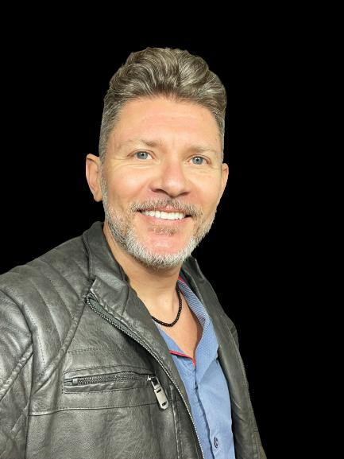

Rodrigo de Matos
Professor de Informática – Ensino Médio, Técnico e Superior
Este portal foi desenvolvido para facilitar o acesso dos alunos aos materiais das disciplinas
ministradas no CEDUP Renato Ramos da Silva e no IFSC – Campus Lages/SC.
Aqui você encontrará conteúdos organizados, atualizados e voltados à prática, apoiando o
aprendizado em sala de aula e o desenvolvimento das competências tecnológicas.

Sobre o Professor
Rodrigo de Matos é Professor Especialista em Informática, com atuação no Ensino Médio, Técnico e Ensino Superior.
Desenvolve suas aulas com foco em metodologias ativas, projetos práticos e uso de tecnologias atuais, buscando tornar o aprendizado mais acessível, aplicado e conectado à realidade profissional dos alunos.
Instituições de Ensino
Os materiais disponibilizados neste portal são utilizados nas aulas ministradas nas seguintes instituições:
CEDUP
Renato Ramos da Silva
IFSC
Instituto Federal de Santa Catarina – Campus Lages
Os conteúdos são organizados por disciplina e nível de ensino, facilitando o acesso e a compreensão dos alunos.
Disciplinas e Materiais
Desenvolvimento Web
Conteúdos voltados à criação de páginas e aplicações web, com foco em HTML, CSS e fundamentos de JavaScript. Inclui exemplos práticos, exercícios e projetos aplicados para diferentes níveis de ensino.
Acessar MaterialBanco de Dados
Materiais sobre modelagem de dados, linguagem SQL e boas práticas no uso de bancos de dados. Inclui exercícios práticos, exemplos e atividades voltadas à aplicação real dos conceitos.
Acessar MaterialLíngua Inglesa
Conteúdos de língua inglesa com foco em tecnologia e informática, abordando vocabulário técnico, leitura e interpretação de textos da área de TI.
Acessar MaterialPercepção de Intervalos Musicais
Meu projeto final (TCC) desenvolvido no curso de Bacharelado em Informática. UNIPLAC - LAGES/SC
Organização dos Conteúdos
Todos os materiais estão organizados em pastas no Google Drive, separadas por disciplina e nível de ensino (Médio, Técnico e Superior). Os conteúdos são atualizados periodicamente.